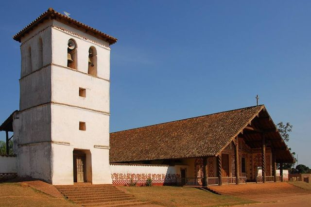
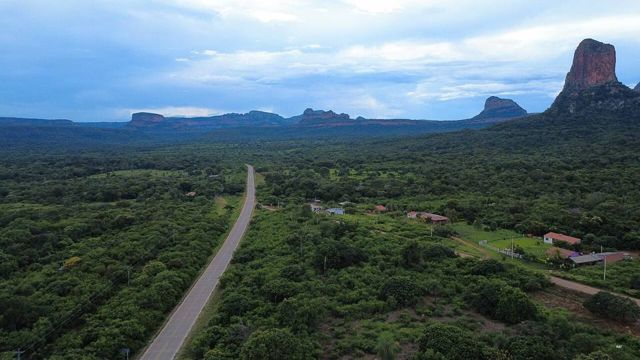
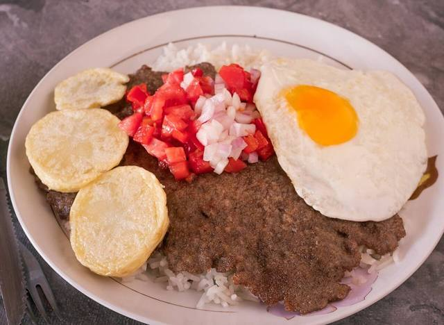
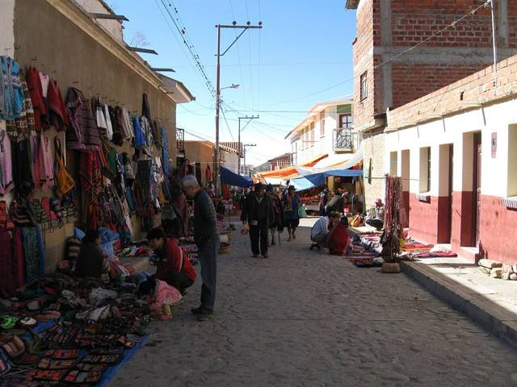

Bolivia a la carta
Guía turística de Bolivia
Qué ver en Bolivia, región por región: 110 lugares, con qué hacer, cómo llegar y qué comer. Para planear el viaje, abre el mapa interactivo.
La Paz, Cordillera y Yungas
La ciudad más alta del mundo, los glaciares de la Cordillera Real y la bajada a los bosques de los Yungas.
 La PazLa sede de gobierno más alta del mundo, en una hoyada al pie del Illimani.
La PazLa sede de gobierno más alta del mundo, en una hoyada al pie del Illimani. El AltoLa gran ciudad aymara en el Altiplano, justo encima de La Paz: una feria gigante, cholets y lucha de cholitas.
El AltoLa gran ciudad aymara en el Altiplano, justo encima de La Paz: una feria gigante, cholets y lucha de cholitas. Valle de la LunaFormaciones de arcilla lunares en la zona sur de La Paz.
Valle de la LunaFormaciones de arcilla lunares en la zona sur de La Paz. Valle de las ÁnimasUn bosque de agujas de tierra al borde de La Paz, más grande y más salvaje que el Valle de la Luna.
Valle de las ÁnimasUn bosque de agujas de tierra al borde de La Paz, más grande y más salvaje que el Valle de la Luna. ChacaltayaAntigua pista de esquí a 5400 m: la vista más alta de la Cordillera Real.
ChacaltayaAntigua pista de esquí a 5400 m: la vista más alta de la Cordillera Real. Huayna PotosíUn «seismil» conocido por ser accesible, con ascenso guiado en 2 o 3 días.
Huayna PotosíUn «seismil» conocido por ser accesible, con ascenso guiado en 2 o 3 días. Cordillera Real: CondoririLagunas glaciares y cumbres nevadas, a 2 h de La Paz.
Cordillera Real: CondoririLagunas glaciares y cumbres nevadas, a 2 h de La Paz. TiwanakuSitio preinca Patrimonio de la UNESCO: la Puerta del Sol y el templo de Kalasasaya.
TiwanakuSitio preinca Patrimonio de la UNESCO: la Puerta del Sol y el templo de Kalasasaya.- Urus de IruitoUna comunidad uru a orillas del río Desaguadero, guardiana de una cultura muy antigua del lago.
 Jesús de MachacaPueblo aymara del Altiplano y su templo de 1706, al sur del lago Titicaca.
Jesús de MachacaPueblo aymara del Altiplano y su templo de 1706, al sur del lago Titicaca. Comanche y sus Puya raimondiiUn bosque de Puya raimondii, la bromelia más grande del mundo, en el Altiplano.
Comanche y sus Puya raimondiiUn bosque de Puya raimondii, la bromelia más grande del mundo, en el Altiplano.- Aguas termales de ViscachaniBaños de agua tibia en el Altiplano, camino a Oruro, a una hora y media de La Paz.
 SorataPueblo tranquilo al pie del Illampu, base de trekkings.
SorataPueblo tranquilo al pie del Illampu, base de trekkings. Charazani y ApolobambaTierra de los kallawayas, médicos andinos (UNESCO), con aguas termales y grandes trekkings.
Charazani y ApolobambaTierra de los kallawayas, médicos andinos (UNESCO), con aguas termales y grandes trekkings. Camino de la Muerte (bici)La bajada en bicicleta más famosa del mundo: de 4650 m a 1200 m en un día.
Camino de la Muerte (bici)La bajada en bicicleta más famosa del mundo: de 4650 m a 1200 m en un día. Trekking del Choro (camino inca)Tres días por un camino prehispánico, de las nieves de La Cumbre al bosque de los Yungas.
Trekking del Choro (camino inca)Tres días por un camino prehispánico, de las nieves de La Cumbre al bosque de los Yungas. Trekking del Takesi (camino inca)Dos días por uno de los caminos incas mejor conservados de Bolivia, hasta Yanacachi.
Trekking del Takesi (camino inca)Dos días por uno de los caminos incas mejor conservados de Bolivia, hasta Yanacachi. Trekking del Yunga CruzEl más salvaje de los caminos prehispánicos hacia los Yungas: 4 a 5 días al pie del Illimani.
Trekking del Yunga CruzEl más salvaje de los caminos prehispánicos hacia los Yungas: 4 a 5 días al pie del Illimani. Coroico (Yungas)Pueblo en lo alto de los Yungas subtropicales: café, cascadas y piscinas con vista.
Coroico (Yungas)Pueblo en lo alto de los Yungas subtropicales: café, cascadas y piscinas con vista. Chulumani (Sud Yungas)Pueblo de los Sud Yungas entre café, coca y bosques de nubes, lejos de la multitud.
Chulumani (Sud Yungas)Pueblo de los Sud Yungas entre café, coca y bosques de nubes, lejos de la multitud.
Lago Titicaca
El lago sagrado de los incas: Copacabana, la Isla del Sol y la Isla de la Luna, a 3800 m.
 Copacabana (lago Titicaca)Pequeña ciudad a orillas del lago Titicaca, puerta de entrada a la Isla del Sol.
Copacabana (lago Titicaca)Pequeña ciudad a orillas del lago Titicaca, puerta de entrada a la Isla del Sol. Isla del SolIsla sagrada de los incas: senderos, ruinas y vistas a la Cordillera Real.
Isla del SolIsla sagrada de los incas: senderos, ruinas y vistas a la Cordillera Real. Isla de la LunaPequeña isla vecina con el templo de las Vírgenes del Sol (Iñak Uyu).
Isla de la LunaPequeña isla vecina con el templo de las Vírgenes del Sol (Iñak Uyu). HuatajataPueblo del lago Titicaca, cuna de las balsas de totora.
HuatajataPueblo del lago Titicaca, cuna de las balsas de totora. Isla SuriquiLa isla de los constructores de balsas de totora, entre ellas las de la expedición Ra II.
Isla SuriquiLa isla de los constructores de balsas de totora, entre ellas las de la expedición Ra II. Isla ParitiPequeña isla del Titicaca con su museo de cerámica Tiwanaku encontrada en el lugar.
Isla ParitiPequeña isla del Titicaca con su museo de cerámica Tiwanaku encontrada en el lugar.
Salar de Uyuni y Altiplano
El salar más grande del mundo, lagunas rojas, el volcán Sajama y los cañones de Tupiza.
 Parque Nacional SajamaLa cumbre más alta de Bolivia (6542 m), géiseres, aguas termales y llamas.
Parque Nacional SajamaLa cumbre más alta de Bolivia (6542 m), géiseres, aguas termales y llamas. Curahuara de CarangasLa «Capilla Sixtina del Altiplano»: un templo de adobe cubierto de pinturas murales.
Curahuara de CarangasLa «Capilla Sixtina del Altiplano»: un templo de adobe cubierto de pinturas murales. OruroCiudad minera del Altiplano, famosa por su Carnaval, Patrimonio de la UNESCO. Punto de partida del tren a Uyuni.
OruroCiudad minera del Altiplano, famosa por su Carnaval, Patrimonio de la UNESCO. Punto de partida del tren a Uyuni. Aguas termales de Obrajes y CapachosPiscinas de agua caliente natural en el Altiplano, a menos de una hora de Oruro.
Aguas termales de Obrajes y CapachosPiscinas de agua caliente natural en el Altiplano, a menos de una hora de Oruro. Museo Ferroviario de MachacamarcaViejas locomotoras a vapor e historia del tren minero, al sur de Oruro.
Museo Ferroviario de MachacamarcaViejas locomotoras a vapor e historia del tren minero, al sur de Oruro. Lagos Uru Uru y PoopóLagos poco profundos del Altiplano, a las puertas de Oruro, donde llegan los flamencos.
Lagos Uru Uru y PoopóLagos poco profundos del Altiplano, a las puertas de Oruro, donde llegan los flamencos. ChipayaEl pueblo de los uru-chipaya, uno de los pueblos más antiguos de los Andes, con casas redondas de tierra.
ChipayaEl pueblo de los uru-chipaya, uno de los pueblos más antiguos de los Andes, con casas redondas de tierra. Salar de CoipasaEl segundo salar más grande de Bolivia, salvaje y casi sin visitantes.
Salar de CoipasaEl segundo salar más grande de Bolivia, salvaje y casi sin visitantes. UyuniPueblo base de los tours al Salar, con un cementerio de trenes a la salida.
UyuniPueblo base de los tours al Salar, con un cementerio de trenes a la salida. Salar de Uyuni + Sud Lípez (tour)El salar más grande del mundo y luego las lagunas de colores del Sud Lípez. Lo mejor de muchos viajes.
Salar de Uyuni + Sud Lípez (tour)El salar más grande del mundo y luego las lagunas de colores del Sud Lípez. Lo mejor de muchos viajes. TupizaPaisajes de western: cañones rojos, cactus y la última huida de Butch Cassidy.
TupizaPaisajes de western: cañones rojos, cactus y la última huida de Butch Cassidy.- CotagaitaPueblo verde de un valle frutícola, en el camino de Potosí a Villazón.
 VillazónLa frontera con Argentina, frente a La Quiaca: el paso más usado por los viajeros.
VillazónLa frontera con Argentina, frente a La Quiaca: el paso más usado por los viajeros.
Sucre y Potosí
La ciudad blanca de Sucre, las minas de plata de Potosí y los tejedores de Tarabuco.
 PotosíLa que fue la ciudad más rica del mundo gracias a la plata del Cerro Rico. Patrimonio de la UNESCO.
PotosíLa que fue la ciudad más rica del mundo gracias a la plata del Cerro Rico. Patrimonio de la UNESCO. Casa Nacional de Moneda (Potosí)La ceca real donde la plata del Cerro Rico se volvía monedas, hoy el gran museo de Bolivia.
Casa Nacional de Moneda (Potosí)La ceca real donde la plata del Cerro Rico se volvía monedas, hoy el gran museo de Bolivia. Ojo del Inca (Tarapaya)Una laguna de agua caliente perfectamente redonda, a 30 minutos de Potosí.
Ojo del Inca (Tarapaya)Una laguna de agua caliente perfectamente redonda, a 30 minutos de Potosí. SucreLa «ciudad blanca», capital constitucional: la ciudad colonial más bella del país.
SucreLa «ciudad blanca», capital constitucional: la ciudad colonial más bella del país. TarabucoGran feria dominical de las comunidades yampara, con tejidos notables.
TarabucoGran feria dominical de las comunidades yampara, con tejidos notables.- CandelariaPueblo yampara más allá de Tarabuco: antigua hacienda, tejidos y turismo rural.
- ZudáñezPueblo de valle ligado a las guerras de la independencia, al este de Sucre.
 Cráter de MaraguaUn sinclinal gigante en rojos y violetas, con pueblos de tejedores jalq'a.
Cráter de MaraguaUn sinclinal gigante en rojos y violetas, con pueblos de tejedores jalq'a.
Tarija, viñedos y Chaco
El sur templado y soleado: viñedos de altura, singani, los bosques de Tariquía y el calor del Gran Chaco.
 TarijaLa Andalucía boliviana: viñedos de altura, singani y ambiente relajado.
TarijaLa Andalucía boliviana: viñedos de altura, singani y ambiente relajado. Valle de la ConcepciónLas bodegas de vino y singani de Tarija.
Valle de la ConcepciónLas bodegas de vino y singani de Tarija. San LorenzoPueblo colonial chapaco, casa del héroe Moto Méndez, a 15 km de Tarija.
San LorenzoPueblo colonial chapaco, casa del héroe Moto Méndez, a 15 km de Tarija. CoimataRío, pozas naturales y una gran cascada, a 20 minutos de Tarija.
CoimataRío, pozas naturales y una gran cascada, a 20 minutos de Tarija. Lago San Jacinto y TomatitasUn lago entre cerros y un río para bañarse, a las puertas de Tarija.
Lago San Jacinto y TomatitasUn lago entre cerros y un río para bañarse, a las puertas de Tarija. Padcaya y ChaguayaPueblo de valle al sur de Tarija, y el gran santuario de la Virgen de Chaguaya.
Padcaya y ChaguayaPueblo de valle al sur de Tarija, y el gran santuario de la Virgen de Chaguaya. BermejoCiudad fronteriza tropical a orillas del río Bermejo, frente a Argentina.
BermejoCiudad fronteriza tropical a orillas del río Bermejo, frente a Argentina. Reserva de Sama: lagunas de TajzaraLagunas de altura, dunas y flamencos en la reserva de Sama, sobre Tarija.
Reserva de Sama: lagunas de TajzaraLagunas de altura, dunas y flamencos en la reserva de Sama, sobre Tarija. Reserva de TariquíaBosques de nubes y ríos salvajes, para trekkings de varios días con guía.
Reserva de TariquíaBosques de nubes y ríos salvajes, para trekkings de varios días con guía. Camargo (valle de Cinti)Viñedos antiguos y farallones rojos del valle de Cinti, entre Potosí y Tarija.
Camargo (valle de Cinti)Viñedos antiguos y farallones rojos del valle de Cinti, entre Potosí y Tarija. Villamontes (Gran Chaco)La puerta del Gran Chaco, a orillas del Pilcomayo y su cañón, El Angosto.
Villamontes (Gran Chaco)La puerta del Gran Chaco, a orillas del Pilcomayo y su cañón, El Angosto. YacuibaLa gran ciudad fronteriza del Chaco, frente a Argentina.
YacuibaLa gran ciudad fronteriza del Chaco, frente a Argentina. CamiriLa «capital petrolera» del Chaco, entre serranías y cultura guaraní.
CamiriLa «capital petrolera» del Chaco, entre serranías y cultura guaraní.
Cochabamba y sus valles
El granero del país: mercados, chicha, ruinas incas y las huellas de dinosaurio de Torotoro.
 CochabambaLa «ciudad de la eterna primavera» y capital gastronómica del país.
CochabambaLa «ciudad de la eterna primavera» y capital gastronómica del país. Laguna AlalayUna gran laguna en el corazón de Cochabamba, refugio de aves al pie de los cerros.
Laguna AlalayUna gran laguna en el corazón de Cochabamba, refugio de aves al pie de los cerros. Pairumani y Villa AlbinaLa villa del barón del estaño Simón Patiño, sus jardines, y el inicio de un sendero al Tunari.
Pairumani y Villa AlbinaLa villa del barón del estaño Simón Patiño, sus jardines, y el inicio de un sendero al Tunari. Parque Nacional TunariLas montañas justo encima de la ciudad: lagunas de altura y la cumbre del Tunari (5035 m).
Parque Nacional TunariLas montañas justo encima de la ciudad: lagunas de altura y la cumbre del Tunari (5035 m).- Apote y sus cascadas gemelasUn valle de montaña encima de Tiquipaya, con dos cascadas lado a lado y senderos hacia el Tunari.
 YungapampaUn refugio sobre un mar de nubes, en la cara norte del Tunari, tierra del oso andino.
YungapampaUn refugio sobre un mar de nubes, en la cara norte del Tunari, tierra del oso andino. Laguna CoraniUn gran lago de represa entre bosques de pinos y montañas, conocido por su trucha.
Laguna CoraniUn gran lago de represa entre bosques de pinos y montañas, conocido por su trucha. IncachacaUn bosque de nubes al borde del Chapare, con un puente inca, cascadas y una vieja planta eléctrica.
IncachacaUn bosque de nubes al borde del Chapare, con un puente inca, cascadas y una vieja planta eléctrica. Valle Alto: Tarata y ClizaPueblos coloniales del valle, mercados y chicha.
Valle Alto: Tarata y ClizaPueblos coloniales del valle, mercados y chicha. Quillacollo e Inca RakayRuinas incas encima de Sipe Sipe, y Quillacollo, ciudad de la Urkupiña.
Quillacollo e Inca RakayRuinas incas encima de Sipe Sipe, y Quillacollo, ciudad de la Urkupiña. Parque Nacional TorotoroHuellas de dinosaurio, un cañón espectacular y la caverna de Umajalanta.
Parque Nacional TorotoroHuellas de dinosaurio, un cañón espectacular y la caverna de Umajalanta. IncallajtaEl sitio inca más grande de Bolivia, en un valle aislado.
IncallajtaEl sitio inca más grande de Bolivia, en un valle aislado. TotoraPueblito colonial muy bien conservado en la carretera antigua a Santa Cruz.
TotoraPueblito colonial muy bien conservado en la carretera antigua a Santa Cruz. AiquileLa capital nacional del charango, a medio camino entre Cochabamba y Sucre.
AiquileLa capital nacional del charango, a medio camino entre Cochabamba y Sucre. MizquePueblo colonial de un valle cálido, tierra de la paraba frente roja.
MizquePueblo colonial de un valle cálido, tierra de la paraba frente roja.
Santa Cruz, Samaipata y Amboró
Tierras bajas tropicales, el pueblo de Samaipata y los bosques de nubes de Amboró.
 Santa Cruz de la SierraLa gran ciudad tropical y moderna del Oriente, con aeropuerto internacional (Viru Viru).
Santa Cruz de la SierraLa gran ciudad tropical y moderna del Oriente, con aeropuerto internacional (Viru Viru). CotocaEl santuario de la Virgen de Cotoca y sus alfareros, a 20 km de Santa Cruz.
CotocaEl santuario de la Virgen de Cotoca y sus alfareros, a 20 km de Santa Cruz. Lomas de ArenaDunas de arena blanca y lagunas al sur de Santa Cruz.
Lomas de ArenaDunas de arena blanca y lagunas al sur de Santa Cruz. EspejillosPozas naturales y cascadas en el río, cerca de Santa Cruz.
EspejillosPozas naturales y cascadas en el río, cerca de Santa Cruz. Laguna VolcánUna laguna escondida en una hoyada de cerros cubiertos de bosque.
Laguna VolcánUna laguna escondida en una hoyada de cerros cubiertos de bosque. SamaipataPueblo bohemio entre Andes y bosque: El Fuerte (UNESCO) y el parque Amboró.
SamaipataPueblo bohemio entre Andes y bosque: El Fuerte (UNESCO) y el parque Amboró. Parque Nacional AmboróBosques de nubes y helechos arborescentes, muy rico en aves.
Parque Nacional AmboróBosques de nubes y helechos arborescentes, muy rico en aves. Buena Vista (Amboró norte)Pueblito al pie del parque Amboró, del lado del bosque tropical: ríos, aves y café.
Buena Vista (Amboró norte)Pueblito al pie del parque Amboró, del lado del bosque tropical: ríos, aves y café. VallegrandePueblo colonial de montaña, en el corazón de la Ruta del Che.
VallegrandePueblo colonial de montaña, en el corazón de la Ruta del Che. La HigueraEl caserío donde fue ejecutado el Che en 1967, hoy lugar de memoria.
La HigueraEl caserío donde fue ejecutado el Che en 1967, hoy lugar de memoria.
Misiones de Chiquitos
Misiones jesuíticas de madera pintada, todavía vivas, y más al norte el parque Noel Kempff Mercado.
 Misiones: San JavierLa primera de las misiones jesuíticas de Chiquitos (UNESCO), con templos de madera pintada.
Misiones: San JavierLa primera de las misiones jesuíticas de Chiquitos (UNESCO), con templos de madera pintada. Misiones: ConcepciónLa plaza más linda de las misiones, con taller de restauración y museo.
Misiones: ConcepciónLa plaza más linda de las misiones, con taller de restauración y museo. Misiones: San Ignacio de VelascoEl cruce del circuito de las misiones, con su laguna.
Misiones: San Ignacio de VelascoEl cruce del circuito de las misiones, con su laguna.
Misiones: San Miguel de VelascoMisión chiquitana con talleres de tallado en madera todavía muy vivos. Misiones: Santa Ana de VelascoLa más auténtica de las misiones de Chiquitos, con su órgano original.
Misiones: Santa Ana de VelascoLa más auténtica de las misiones de Chiquitos, con su órgano original. Misiones: San Rafael de VelascoTemplo misional decorado con mica y madera pintada, entre San Ignacio y San José.
Misiones: San Rafael de VelascoTemplo misional decorado con mica y madera pintada, entre San Ignacio y San José. Misiones: San José de ChiquitosLa única misión jesuítica de piedra, al pie de la serranía.
Misiones: San José de ChiquitosLa única misión jesuítica de piedra, al pie de la serranía. Parque Nacional Noel Kempff MercadoParque UNESCO inmenso y muy aislado: la meseta de Huanchaca y la catarata Arco Iris.
Parque Nacional Noel Kempff MercadoParque UNESCO inmenso y muy aislado: la meseta de Huanchaca y la catarata Arco Iris.
Roboré y la Serranía de Chiquitos
Farallones rojos, cascadas, un río de agua caliente y el tren de la muerte hacia Brasil.
 Chochís y la Torre de DavidUn enorme farallón rojo, la Torre de David, con un santuario a sus pies y cascadas en el valle de Tucavaca.
Chochís y la Torre de DavidUn enorme farallón rojo, la Torre de David, con un santuario a sus pies y cascadas en el valle de Tucavaca.
RoboréPueblo tranquilo de la Chiquitanía, base para Santiago de Chiquitos, Chochís y Aguas Calientes. Santiago de ChiquitosAntiguo pueblo misional en la serranía: miradores, caminatas, cuevas y cascadas.
Santiago de ChiquitosAntiguo pueblo misional en la serranía: miradores, caminatas, cuevas y cascadas. Aguas Calientes (río termal)Un río de agua caliente natural (unos 38 °C) en medio del bosque, para bañarse entre pececitos.
Aguas Calientes (río termal)Un río de agua caliente natural (unos 38 °C) en medio del bosque, para bañarse entre pececitos.
Amazonía
La selva de Madidi y las pampas del Yacuma: monos, caimanes y delfines rosados.
 RurrenabaquePuerta de entrada a la Amazonía boliviana, a orillas del río Beni.
RurrenabaquePuerta de entrada a la Amazonía boliviana, a orillas del río Beni. Parque Nacional MadidiUno de los lugares con más biodiversidad del planeta. Bosque primario.
Parque Nacional MadidiUno de los lugares con más biodiversidad del planeta. Bosque primario. Pampas del YacumaHumedales llenos de animales: caimanes, capibaras y delfines rosados.
Pampas del YacumaHumedales llenos de animales: caimanes, capibaras y delfines rosados. Reserva Barba AzulSabanas del Beni, refugio de la paraba barba azul, uno de los loros más raros del mundo.
Reserva Barba AzulSabanas del Beni, refugio de la paraba barba azul, uno de los loros más raros del mundo. Reserva de la Biosfera del BeniSabanas, bosques y lagunas cerca de San Borja: una reserva muy rica en fauna, todavía poco visitada.
Reserva de la Biosfera del BeniSabanas, bosques y lagunas cerca de San Borja: una reserva muy rica en fauna, todavía poco visitada. Trinidad (Llanos de Moxos)Capital del Beni, llanuras inundables y cultura moxeña.
Trinidad (Llanos de Moxos)Capital del Beni, llanuras inundables y cultura moxeña. Laguna SuárezUna gran laguna tranquila a las puertas de Trinidad, para bañarse y comer pescado.
Laguna SuárezUna gran laguna tranquila a las puertas de Trinidad, para bañarse y comer pescado. San Ignacio de MoxosAntigua misión jesuítica de las llanuras del Beni, famosa por la Ichapekene Piesta (UNESCO).
San Ignacio de MoxosAntigua misión jesuítica de las llanuras del Beni, famosa por la Ichapekene Piesta (UNESCO). CobijaLa capital de Pando, a orillas del río Acre, frente a Brasil: puerta de la Amazonía del norte.
CobijaLa capital de Pando, a orillas del río Acre, frente a Brasil: puerta de la Amazonía del norte. Porvenir y el río TahuamanuPueblo amazónico cerca de Cobija: paseos en bote por el Tahuamanu y piscina natural.
Porvenir y el río TahuamanuPueblo amazónico cerca de Cobija: paseos en bote por el Tahuamanu y piscina natural. Puerto Rico y la reserva ManuripiPueblo en la confluencia de dos ríos, puerta de la reserva amazónica Manuripi.
Puerto Rico y la reserva ManuripiPueblo en la confluencia de dos ríos, puerta de la reserva amazónica Manuripi. RiberaltaPuerto amazónico en la confluencia del Beni y el Madre de Dios, capital de la castaña.
RiberaltaPuerto amazónico en la confluencia del Beni y el Madre de Dios, capital de la castaña. GuayaramerínCiudad fronteriza a orillas del río Mamoré, frente a la ciudad brasileña de Guajará-Mirim.
GuayaramerínCiudad fronteriza a orillas del río Mamoré, frente a la ciudad brasileña de Guajará-Mirim.
Cultura y tradiciones
Cinco maneras de conocer Bolivia más allá de sus paisajes.

Fiestas
Las grandes fiestas de Bolivia, mes por mes: carnavales, entradas folklóricas y peregrinaciones, con dónde y cuándo se celebran.

Sabores
Los platos para probar, región por región, y dónde encontrarlos.
Patrimonio UNESCO
Los sitios y tradiciones de Bolivia inscritos por la UNESCO.

Artesanía y mercados
Tejidos, madera tallada, plata y los mercados donde todo se vende.

Mitos y leyendas
Las historias que se cuentan en Bolivia y los lugares donde ocurren.